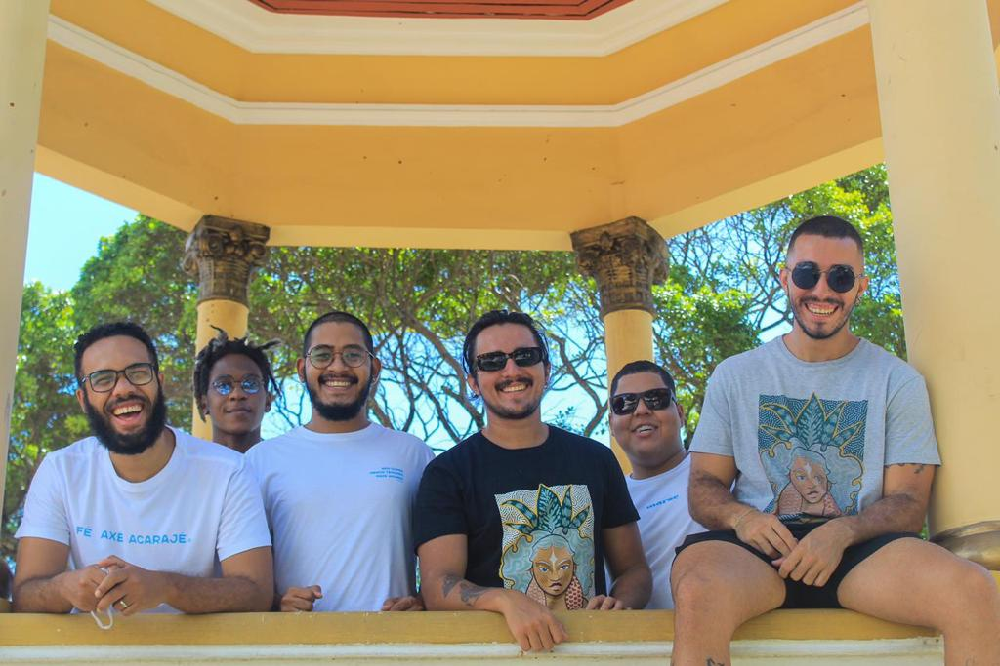

história
A banda nasceu em meados de 2020, no auge da pandemia quando surgiu a necessidade de fazer um som diferente na cena sergipana, unindo traços latinos e baianos. Essa 'mistureba' trouxe um fenômeno musical muito interessante e que persiste na mente e no coração de todos que adoram curtir um som dançante com letras bastante atuais e muita melodia. A vinda da guitarra baiana trouxe para a banda um universo de possibilidades, trazendo muita criatividade na hora de compor. Gastasom é:- André Macedo - guitarra/vocal
- Vinicius Piones - guitarra/guitarrinha baiana/vocal
- Artur Piones - bateria
- Nathan Castro - baixo
- Otavio Santiago - percussão
- Diego Oneal - percussão/samples
discografia
EP Quintal
Primeiro trabalho da Gastasom, este EP contém influências de salsa, cumbia, brega e sobretudo música nordestina.
"Cores"
Primeiro single ''axézístico'' da banda e primeiro trabalho de 2022. Influência baiana de axé e afoxé.
contato
Contrate-nos para shows e eventos! Dia e preço a combinar.